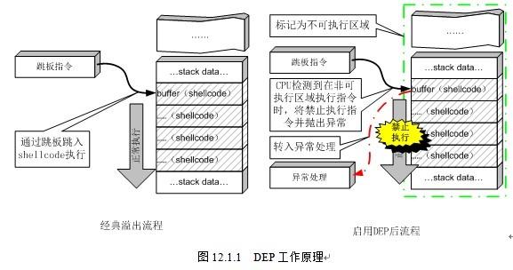

Linux程序的常用保护机制
CANNARY
栈保护
这个选项表示栈保护功能有没有开启。
栈溢出保护是一种缓冲区溢出攻击缓解手段，当函数存在缓冲区溢出攻击漏洞时，攻击者可以覆盖栈上的返回地址来让shellcode能够得到执行。当启用栈保护后，函数开始执行的时候会先往栈里插入cookie信息，当函数真正返回的时候会验证cookie信息是否合法，如果不合法就停止程序运行。攻击者在覆盖返回地址的时候往往也会将cookie信息给覆盖掉，导致栈保护检查失败而阻止shellcode的执行。在Linux中我们将cookie信息称为canary。
gcc在4.2版本中添加了-fstack-protector和-fstack-protector-all编译参数以支持栈保护功能，4.9新增了-fstack-protector-strong编译参数让保护的范围更广。
因此在编译时可以控制是否开启栈保护以及程度，例如：
1 | gcc -o test test.c // 默认情况下，不开启Canary保护 |
FORTIFY
fority其实非常轻微的检查，用于检查是否存在缓冲区溢出的错误。适用情形是程序采用大量的字符串或者内存操作函数，如memcpy，memset，stpcpy，strcpy，strncpy，strcat，strncat，sprintf，snprintf，vsprintf，vsnprintf，gets以及宽字符的变体。
_FORTIFY_SOURCE设为1，并且将编译器设置为优化1(gcc -O1)，以及出现上述情形，那么程序编译时就会进行检查但又不会改变程序功能
_FORTIFY_SOURCE设为2，有些检查功能会加入，但是这可能导致程序崩溃。
gcc -D_FORTIFY_SOURCE=1 仅仅只会在编译时进行检查 (特别像某些头文件 #include <string.h>)
gcc -D_FORTIFY_SOURCE=2 程序执行时也会有检查 (如果检查到缓冲区溢出，就终止程序)
举个例子可能简单明了一些： 一段简单的存在缓冲区溢出的C代码
1 | void fun(char *s) { |
用包含参数-U_FORTIFY_SOURCE编译
1 | 08048450 <fun>: |
用包含参数-D_FORTIFY_SOURCE=2编译
1 | 08048470 <fun>: |
我们可以看到gcc生成了一些附加代码，通过对数组大小的判断替换strcpy, memcpy, memset等函数名，达到防止缓冲区溢出的作用。
总结下就有:
1 | gcc -o test test.c // 默认情况下，不会开这个检查 |
NX（DEP）
NX即No-eXecute（不可执行）的意思，NX（DEP）的基本原理是将数据所在内存页标识为不可执行，当程序溢出成功转入shellcode时，程序会尝试在数据页面上执行指令，此时CPU就会抛出异常，而不是去执行恶意指令。
工作原理如图：

gcc编译器默认开启了NX选项，如果需要关闭NX选项，可以给gcc编译器添加-z execstack参数。 例如：
1 | gcc -o test test.c // 默认情况下，开启NX保护 |
在Windows下，类似的概念为DEP（数据执行保护），在最新版的Visual Studio中默认开启了DEP编译选项。
PIE（ASLR）
一般情况下NX（Windows平台上称其为DEP）和地址空间分布随机化（ASLR）会同时工作。
内存地址随机化机制（address space layout randomization)，有以下三种情况
1 | 0 - 表示关闭进程地址空间随机化。 |
可以防范基于Ret2libc方式的针对DEP的攻击。ASLR和DEP配合使用，能有效阻止攻击者在堆栈上运行恶意代码。
Built as PIE：位置独立的可执行区域（position-independent executables）。这样使得在利用缓冲溢出和移动操作系统中存在的其他内存崩溃缺陷时采用面向返回的编程（return-oriented programming）方法变得难得多。
liunx下关闭PIE的命令如下：
1 | sudo -s echo 0 > /proc/sys/kernel/randomize_va_space |
gcc编译命令
1 | gcc -o test test.c // 默认情况下，不开启PIE |
说明：
PIE最早由RedHat的人实现，他在连接起上增加了-pie选项，这样使用-fPIE编译的对象就能通过连接器得到位置无关可执行程序。fPIE和fPIC有些不同。可以参考Gcc和Open64中的-fPIC选项.
gcc中的-fpic选项，使用于在目标机支持时，编译共享库时使用。编译出的代码将通过全局偏移表(Global Offset Table)中的常数地址访存，动态装载器将在程序开始执行时解析GOT表项(注意，动态装载器操作系统的一部分，连接器是GCC的一部分)。而gcc中的-fPIC选项则是针对某些特殊机型做了特殊处理，比如适合动态链接并能避免超出GOT大小限制之类的错误。而Open64仅仅支持不会导致GOT表溢出的PIC编译。
gcc中的-fpie和-fPIE选项和fpic及fPIC很相似，但不同的是，除了生成为位置无关代码外，还能假定代码是属于本程序。通常这些选项会和GCC链接时的-pie选项一起使用。fPIE选项仅能在编译可执行码时用，不能用于编译库。所以，如果想要PIE的程序，需要你除了在gcc增加-fPIE选项外，还需要在ld时增加-pie选项才能产生这种代码。即gcc -fpie -pie来编译程序。单独使用哪一个都无法达到效果。
RELRO
在Linux系统安全领域数据可以写的存储区就会是攻击的目标，尤其是存储函数指针的区域。 所以在安全防护的角度来说尽量减少可写的存储区域对安全会有极大的好处.
GCC, GNU linker以及Glibc-dynamic linker一起配合实现了一种叫做relro的技术: read only relocation。大概实现就是由linker指定binary的一块经过dynamic linker处理过 relocation之后的区域为只读.
设置符号重定向表格为只读或在程序启动时就解析并绑定所有动态符号，从而减少对GOT（Global Offset Table）攻击。RELRO为” Partial RELRO”，说明我们对GOT表具有写权限。
gcc编译
1 | gcc -o test test.c // 默认情况下，是Partial RELRO |
总结
各种安全选择的编译参数如下：
NX：-z execstack / -z noexecstack (关闭 / 开启)
Canary：-fno-stack-protector /-fstack-protector / -fstack-protector-all (关闭 / 开启 / 全开启)
PIE：-no-pie / -pie (关闭 / 开启)
RELRO：-z norelro / -z lazy / -z now (关闭 / 部分开启 / 完全开启)